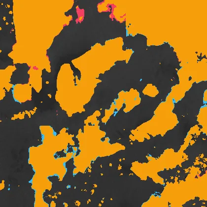
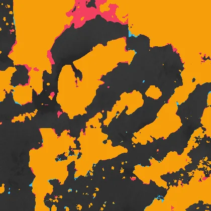
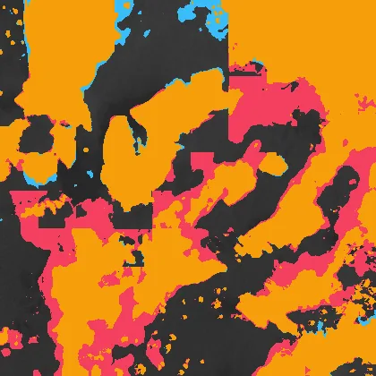
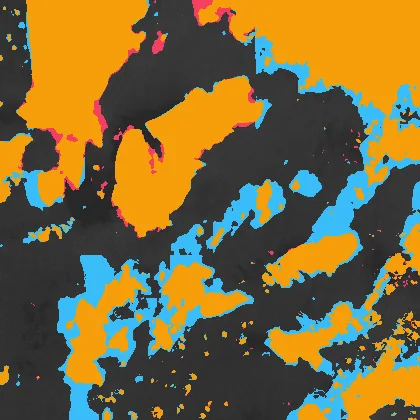
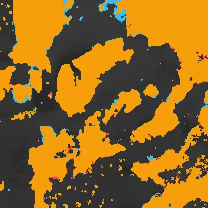
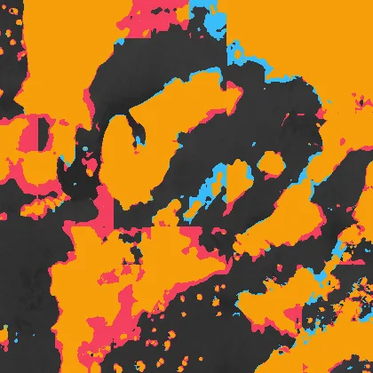
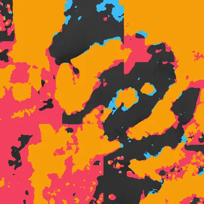
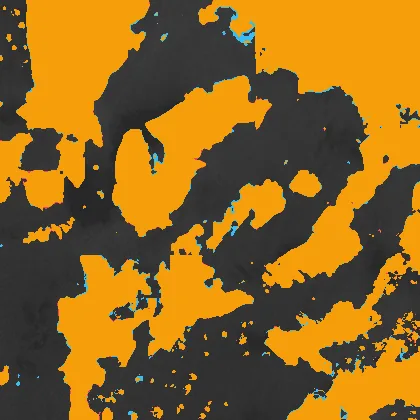

Benchmark / Use cases / Cloud mask / Results / T44PNB-20260429
T44PNB-20260429
Compression ratio and cloud mask
Each point is one level of a codec, named when you point at it, on this sample.
GeoZL PIVCOGeoZL PFORJPEG XLgeorvq
Change in cloud mask
The result from compressed data at each level.cloud on bothlostnew
GeoZL PIVCO
 quant-geozl-med-pivco-rms-tau5, RMSE 4.89
quant-geozl-med-pivco-rms-tau5, RMSE 4.89
5.8× · cloud_iou +0.989
quant-geozl-med-pivco-rms-tau10, RMSE 9.53
8.0× · cloud_iou +0.955
quant-geozl-med-pivco-rms-tau20, RMSE 19.9
10.6× · cloud_iou +0.921 quant-geozl-med-pivco-rms-tau40, RMSE 39.4
quant-geozl-med-pivco-rms-tau40, RMSE 39.4
12.7× · cloud_iou +0.721 quant-geozl-med-pivco-rms-tau80, RMSE 74.9
quant-geozl-med-pivco-rms-tau80, RMSE 74.9
16.3× · cloud_iou +0.725GeoZL PFOR
quant-geozl-planar-pfor-rms-tau5, RMSE 4.89
4.5× · cloud_iou +0.989 quant-geozl-planar-pfor-rms-tau10, RMSE 9.53
quant-geozl-planar-pfor-rms-tau10, RMSE 9.53
5.6× · cloud_iou +0.955 quant-geozl-planar-pfor-rms-tau20, RMSE 19.9
quant-geozl-planar-pfor-rms-tau20, RMSE 19.9
7.1× · cloud_iou +0.921
quant-geozl-planar-pfor-rms-tau40, RMSE 39.4
8.4× · cloud_iou +0.721
quant-geozl-planar-pfor-rms-tau80, RMSE 74.9
13.4× · cloud_iou +0.725 JPEG XL
jpegxl-distance-tau5, RMSE 4.98
6.2× · cloud_iou +0.995jpegxl-distance-tau10, RMSE 9.91
11.5× · cloud_iou +0.986
jpegxl-distance-tau20, RMSE 19.8
48.3× · cloud_iou +0.950
jpegxl-distance-tau40, RMSE 39.9
747.6× · cloud_iou +0.781
jpegxl-distance-tau80, RMSE 56.3
2606.3× · cloud_iou +0.632 georvq
georvq-s2-v1-rung8-0, RMSE 39.2
287.3× · cloud_iou +0.918georvq-s2-v1-rung8-1, RMSE 30.2
132.9× · cloud_iou +0.955
georvq-s2-v1-rung8-2, RMSE 23.9
86.5× · cloud_iou +0.973georvq-s2-v1-rung8-3, RMSE 21.2
64.1× · cloud_iou +0.979georvq-s2-v1-rung8-4, RMSE 19.4
50.9× · cloud_iou +0.983georvq-s2-v1-rung8-5, RMSE 18.1
42.2× · cloud_iou +0.986georvq-s2-v1-rung8-6, RMSE 17.2
36.1× · cloud_iou +0.988georvq-s2-v1-rung8-7, RMSE 16.5
31.5× · cloud_iou +0.989georvq-s2-v1-rung8-8, RMSE 15.9
27.9× · cloud_iou +0.989